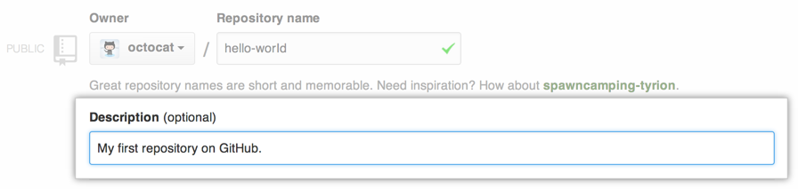
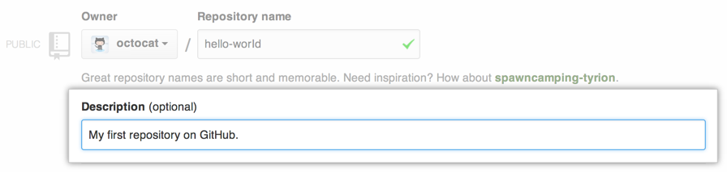
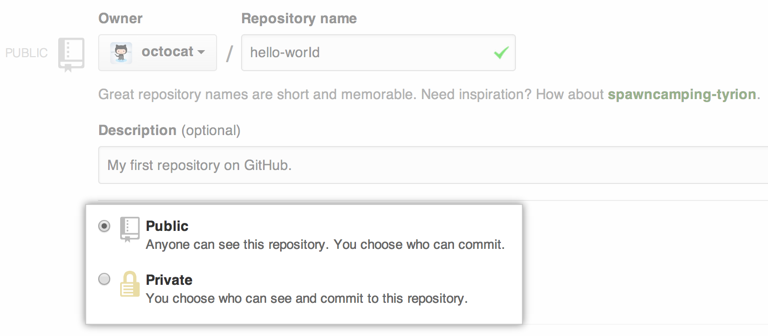
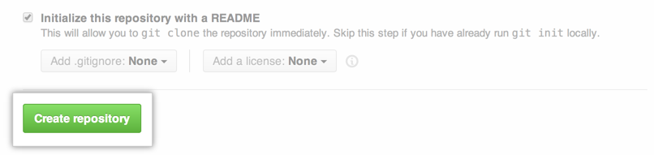

Introducción a Git
Tankathon UPM 2015
¿Git?
- Sistema de control de versiones.
- Almacena los cambios realizados a ficheros.
- Permite llevar un control de éstos y acceder a una versión antigua.
¿Como funciona?
Modelo de datos
Otros: Almacena cambios en ficheros
Git: Genera instantáneas del proyecto a lo largo del tiempo
Trabajo sin conexión
Operaciones locales
Integridad
Verificado mediante chekcsum
Hash SHA-1
Instalación
Linux
Ubuntu/Debian
sudo apt-get install git
Otros
InstruccionesWindows
InstaladorOSX
InstaladorMi primer repositorio
git init
touch fichero.txt
git add fichero.txt
git commit -m "Initial Commit!"
No tan rápido
¿Qué es todo esto?
git init
touch fichero.txt
git add fichero.txt
git commit -m "Initial Commit!"
¿Qué es un repositorio público?
Posibles servidores Git
Crear una cuenta en GitHub
- Entrar en github.com y rellenamos los datos.
- Elegimos plan Free.
- Configuramos nuestro nombre de usuario:
git config --global user.name usuario - Configuramos nuestro correo:
git config --global user.email usuario@gmail.com
Crear un repositorio en GitHub (I)
En la barra de tareas superior seleccionamos el símbolo '+' para añadir nuevo repositorio.

Crear un repositorio en GitHub (II)
Le damos un nombre y una descripción a nuestro proyecto.
 

Crear un repositorio en GitHub (III)
Elegimos crear un repositorio público y creamos respositorio.
 